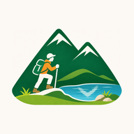
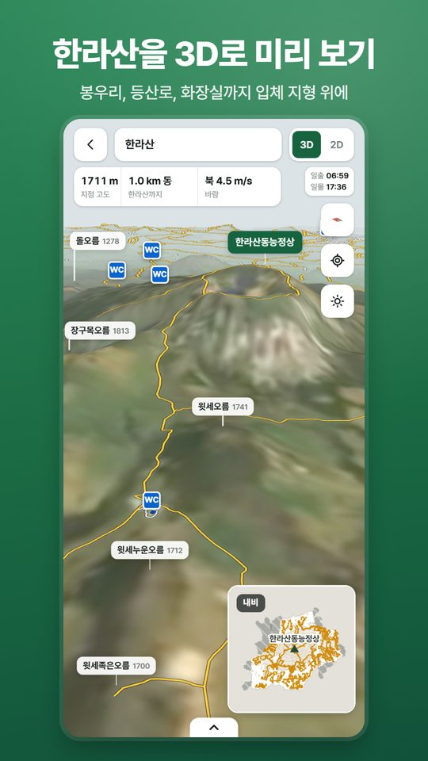
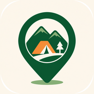
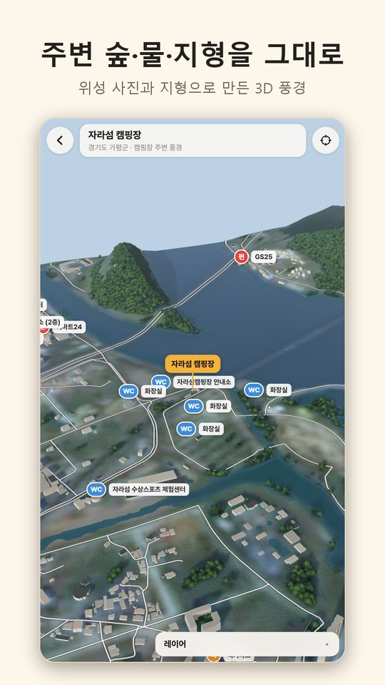
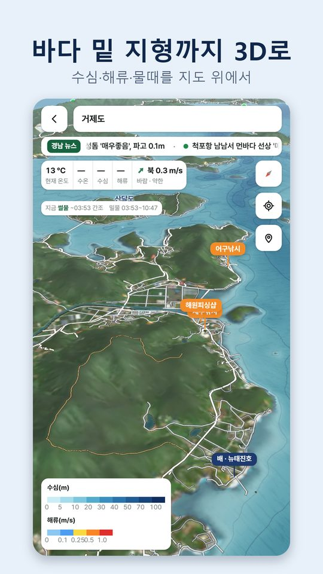

등산객 (Hiking Korea)
Google Play 출시 준비 중전국 4,000여 개 산을 3D로 미리 보고, 정상까지 가는 길을 찾아보세요.
- 산 입체 지형, 100대 명산, 내 주변 산
- 들머리~정상 길 안내, 거리·오르막·예상 시간
- 산행 기록, 기상청 주간 예보, 일출·일몰

위성 사진과 지형 자료로 한국의 산·캠핑장·바다·관광지를 3D로 미리 보여 주는 안드로이드 앱을 만듭니다.

전국 4,000여 개 산을 3D로 미리 보고, 정상까지 가는 길을 찾아보세요.


전국 캠핑장 주변의 숲·물·지형을 3D로 미리 보고, 풍경·지역·날씨로 캠핑장을 찾아보세요.

전국 섬·해안 낚시터의 바다 밑 지형과 물때·해류·날씨를 3D 지도로 미리 보세요.

전국 관광지를 시·군·구 3D 지형 위에 핀으로 보여 주는 여행 앱입니다.